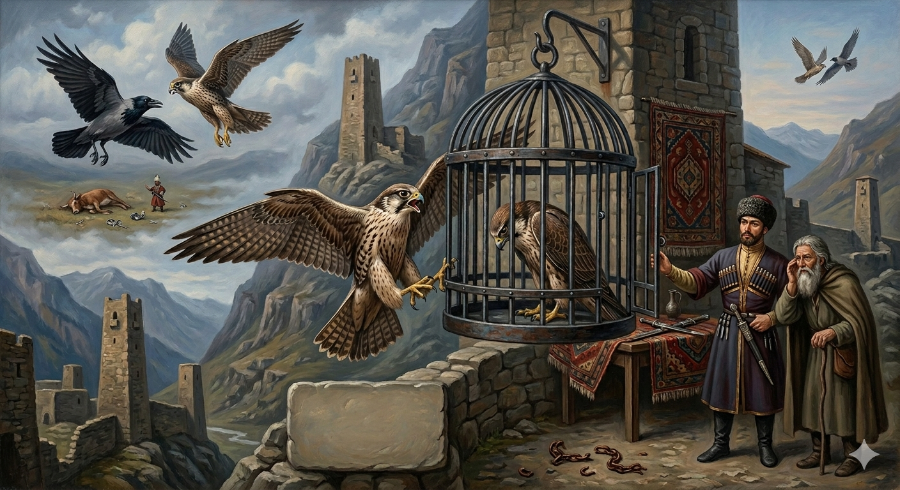

И.А. Дахкильгов. Хьехаме дувцарш - поучительные рассказы-притчи.
И.А. Дахкильгов. Хьехаме дувцарш - поучительные рассказы-притчи. Из ингушского фольклора.

Кери къайги
Кери къайги, вӀаший доттагӀал а тесса, новкъа даьннад. Гаьннарча мехка долхаш, къайг кӀаьдъеннай. Аьннад цо: "Со-м кӀаьдъеннай, дӀая матац сона". Цхьа аьла хиннав къе енна сиргӀа Ӏо а йилла, оалхазараш лувцаш. Къайго аьннад керага: "Цу сиргӀах Ӏа сона хӀама ца яхье, дӀалела могаргдолаш яц со". СиргӀана тӀадаха кер боанго лаьцад. ТӀаккха хӀама а ца оалаш, къайг гӀетта даӀийккхай. Аьлано аьшка цӀалг а даь, кер чуделлад. ХӀара денна цу аьшка цӀалга дӀатӀадетталуш хиннад кхыдола кер. Изи кӀала дагӀари вӀашкадетталуш, цӀувзаш хиннад. Цу хӀаманна бахьан ха гӀерташ волча аьлано тӀавийхав дуне тӀа са мел доаллача хӀаман мотт ховш вола саг. Керашка ла а дийгӀа, аьннад цо: - Аьшка цӀалга тӀадетталуча керо йоах кӀаларчунга: "Ӏа кераца ткъам биллабаларе, лаьца хургдацар хьо. Ӏа оагӀув билларга хьежжа лаьца дагӀа хьо". ТӀаккха аьлано кер дӀадахийтад.
РУССКИЙ
Сокол и ворона
Подружились сокол и ворона. Как-то отправились они в путь. Летели далеко. Вот ворона села и сказала соколу: "Устала я, лететь не могу. Во-он вдали я вижу сдохшего бычка. Если ты не принесешь мне его мяса, я не смогу подняться". А этот дохлый бычок был приманкой для птиц, - некий князь установил вокруг него капканы. Подлетел сокол к приманке и попался. Ничего не сказала ворона. Поднялась и улетела. Князь посадил сокола в железную клетку. Ежедневно стал прилетать другой сокол. Он бил крылом по клетке и о чем-то клекотал. Князь пригласил человека, знающего языки животных. Тот послушал этих птиц и перевел: "Прилетающий сокол говорит пойманному: "Если бы ты спарил свое крыло с соколом, ты не попался бы. С кем ты повелся, от того и набрался". Тогда князь отпустил этого сокола.
ENGLISH
The Falcon and the Crow
The falcon and the crow became friends. One day, they set off on a journey together. They flew a long way. Then the crow landed and said to the falcon, "I'm tired. I can't fly any further. I can see a dead calf over there in the distance. If you don't bring me some of its meat, I won't be able to take off again." But this dead calf was a decoy for birds - a certain prince had set traps around it. The falcon flew up to the decoy and got caught. The crow said nothing. She rose and flew away. The prince put the falcon in an iron cage. Every day, another falcon would fly in. It would beat its wings against the cage and caw about something. The prince summoned a man who understood the language of animals. The man listened to the birds and translated: "The falcon that has flown in says to the captive one: "If you had joined your wing with the falcon's, you would not have been caught. You have become like those you have associated with." Then the prince set the falcon free.
НОХЧИЙН
Куьйрий къиггий
Куьйрий къиггий, вовшашца доттагӀалла а тесна, новкъа даьлла. Генарчу махка доьлхуш, къиг кӀадйелла. Аьлла цо: "Со-м кӀадйелла, дӀайан магац суна". Цхьа эла хилла кхен тӀе йелла старгӀа охьа а йиллина, олхазарш лоьцуш. Къийго аьлла куьйране: "Цу старгӀанах ахь суна хӀума ца йахь, дӀалела мегар йолуш йац со". СтаргӀина тӀедахна куьйра гуро лаьцна. ТӀаккха хӀумма а ца олуш, къиг гӀеттина дӀаиккхина. Эло аьчка цӀелиг а деана, куьйра чудоьллина. ХӀор дийнахь цу аьчка цӀелигах дӀатӀедетталуш хилла кхидолу куьйра. Изий кӀел доллургий вовшахдетталуш, цӀийзаш хилла. Цу хӀуманан бахьана хаа гӀерташ волучу эло тӀевийхина дуьне тӀехь са мел доллучу хӀуманан мотт хууш волу стаг. Куьйрашка ла а доьгӀна, аьлла цо: - Аьчка цӀелиган тӀедетталучу куьйрано боху кӀеларчуьнга: "Ахь куьйранца тӀам биллина белхьара, лаьцна хир дацар хьо. Ахь лелийна доттагӀалле хьаьжжана лаьцна доллу хьо". ТӀаккха эло куьйра дӀадахийтина.
ПОГОВОРКИ
Айвенна лийнар кӀоаг чу кхийттав, теӀа лийнар лакхвеннав. - Взлетевший вверх свалился в яму, вознесся тот, кто скромно жил. Де ца дезар даьчоа да ца дезар денад. - Кто делает неположенное, получит нежелаемое. ЗагӀа дӀаденначоа дукха хет, дӀаийцачоа кӀезига хет. - Подающему на похоронах кажется, что много дал, а получившему - что мало получил. ХьоашалгӀа иха воацачоа лерттӀа хьаьша тӀаэца ховргдац. - Кто сам не бывал в гостях, тот не сумеет толком гостя принять. ДегӀ-кеп йолаш вар аьнна пайда бац, хьаькъал долаш веце. - Нет проку от внушительной внешности, коли ума недостает. "Ер де сона хац", оалараш нийсалу, "дуаш-молаш вац со" оалараш нийсалац. - Есть говорящие - "это не умею делать", но нет говорящих - "я не пью и не ем". Итт сага дикадар де: хьо кӀалвисача, царех цаӀ мукъа короргва хьона. - Сделай десятерым добро: в трудный час хотя бы один из них придет тебе на помощь. Йоккхача майдана барт бохабе тоъаргва мотт бетташ вола цхьа саг. - В большой сельский сход может внести разлад один сплетник. Кепиг кепига тӀа дуллаш, Ӏоаду рузкъа. - Богатство создают, складывая копейку к копейке. Когаш кхола даьхкачун кулгаш даьттала даьхкад. - У кого обувь бывает в навозе, у того руки бывают в масле. Кхалаж баьккха бале а бӀехале ший мохк дикагӀа хийттаб. - И змее милее свой край, даже если это мусорная куча. Кхоана лергвале а, тахан ваха веза. - Даже когда знаешь, что завтра умрешь, сегодня ты должен жить. Къавенна тишвеннача сага кхо ког эш. - Старому и немощному нужны три ноги (посох нужен). Къийвелча хов мала хиннав хьа бокъонцара доттагӀа. - Лишь обеднев, узнаешь, кто был твоим истинным другом. Массе хана цкъа дахача гӀолла хий а дахадац. - Даже река постоянно не течет по одному и тому же руслу. Моцалла леш уллачунна дошо лоамаш эшац. - Умирающему с голоду не нужны золотые горы. Наьха вонах ца кхийрар ший дикага кхийнавац. - Кто не боялся вреда от людей, тот не достиг благополучия. Наьха рузкъах хьегачул дикагӀа да хьай рузкъа Ӏовдича. - Чем завидовать чужому добру, лучше свое накапливать. Нитташи хьажкӀаши цхьан кхай тац. - На одном поле не уживаются крапива и кукуруза. Сайга "вир" алалехьа "вир" ала аз. - Пока он меня не назвал ишаком, дай-ка я его первым назову. Тешаме воацар зуламе ва. - Опасен тот, кому нельзя доверять. "Хац, дац" - цхьа дош, "хайра, дайра" - эзар дош. - "Нет, не знаю" - одно слово, "знаю, видел" - тысяча слов. Шу чам болашагӀа хул фусам-да безамегӀа хуле. - Угощение вкуснее, когда хозяин любезнее. Эхь-эздел базар тӀа эцаш-дохкаш хилац. - Честь и благородство на базаре не продаются и не покупаются.